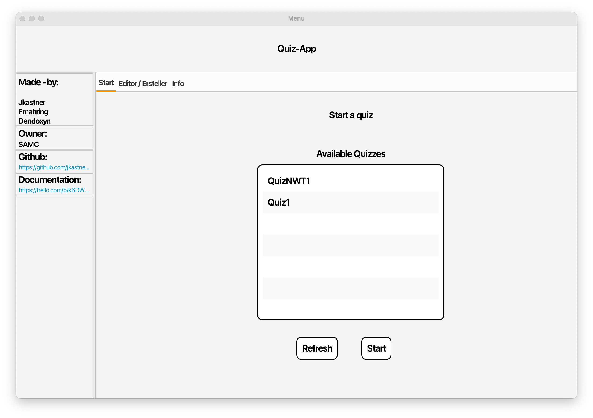
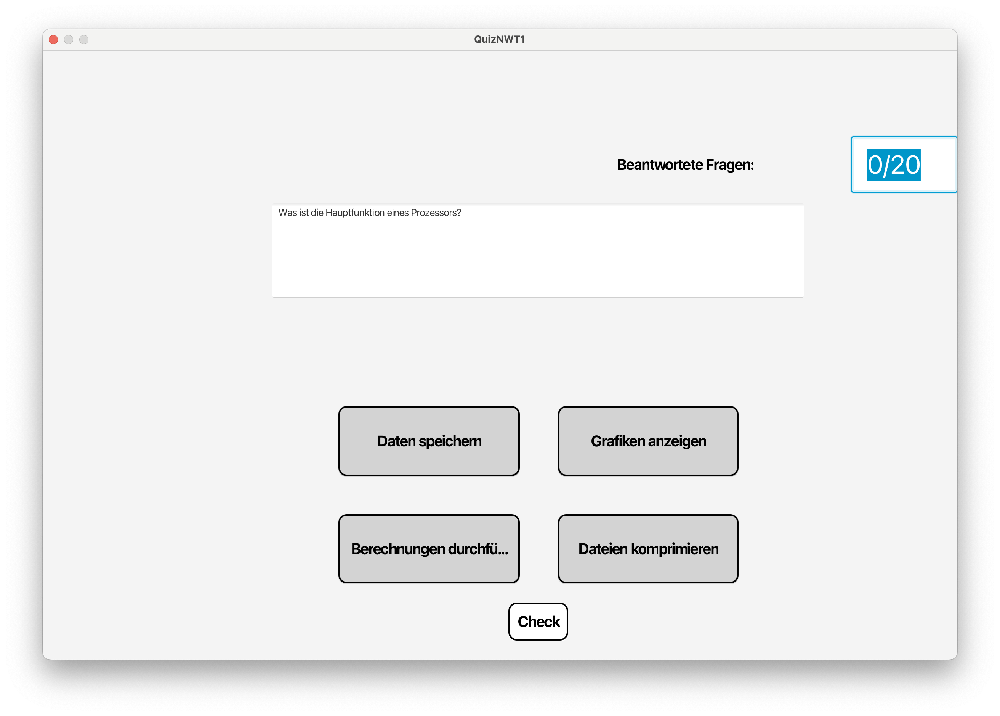
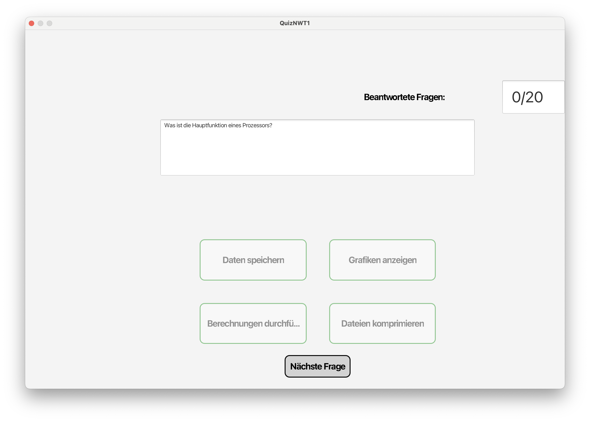
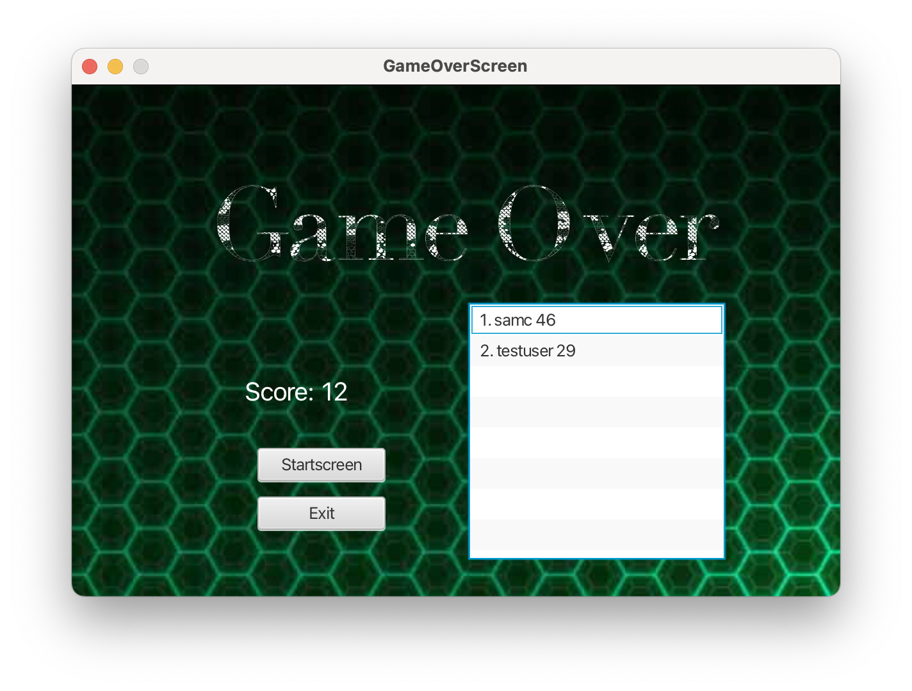
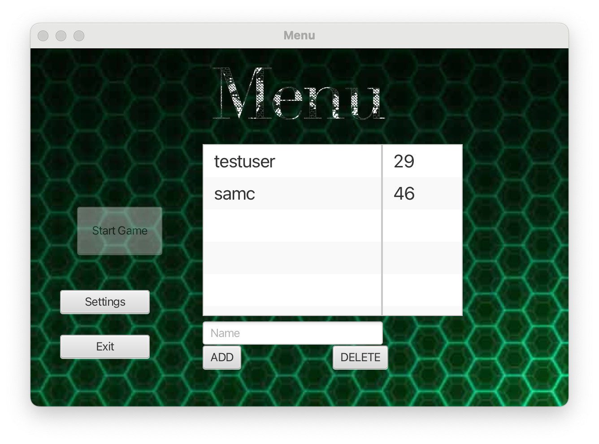
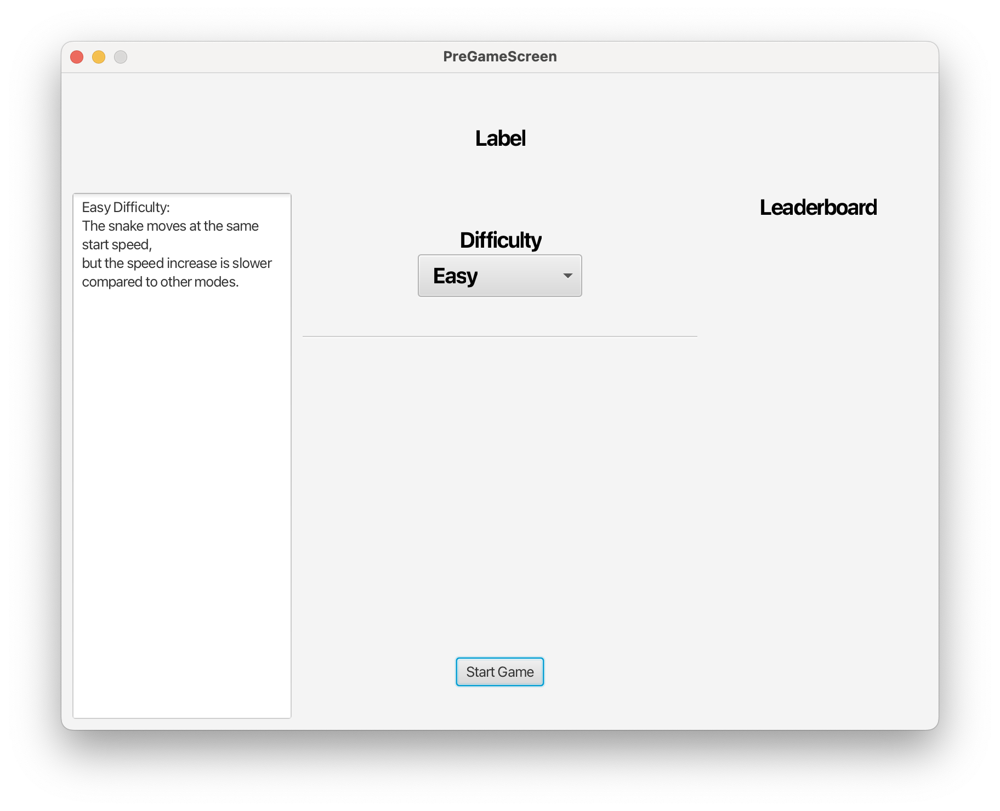
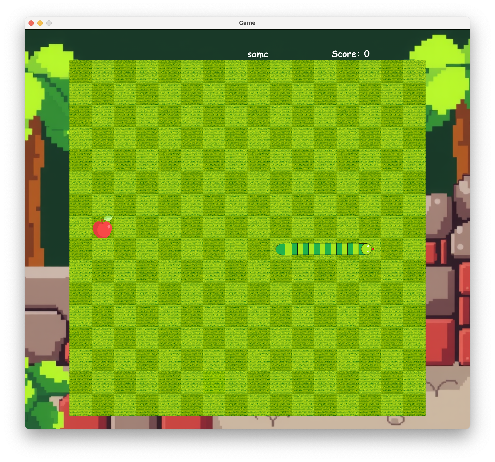
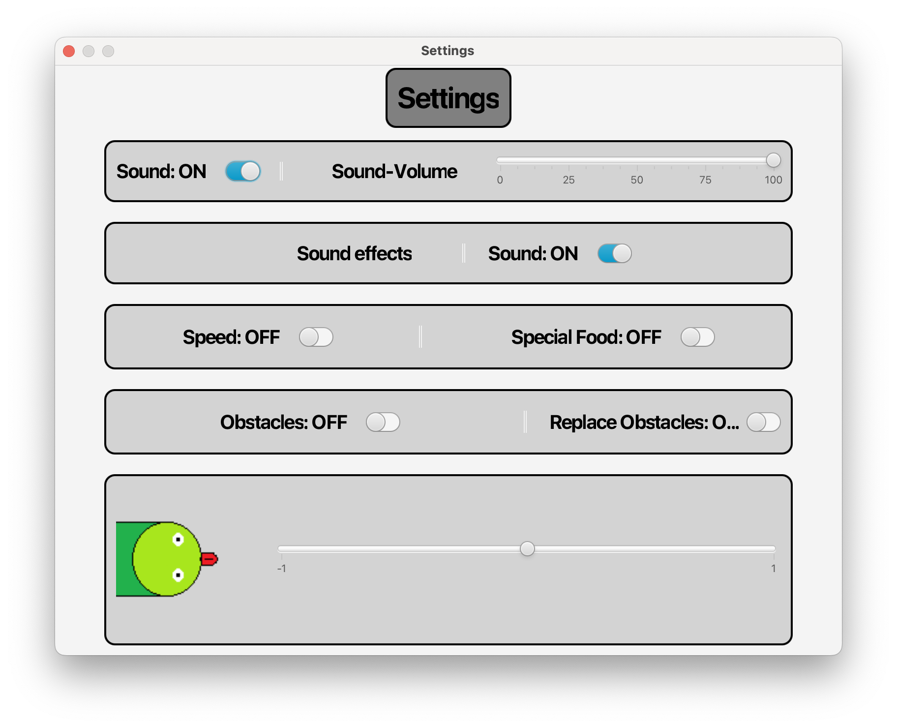
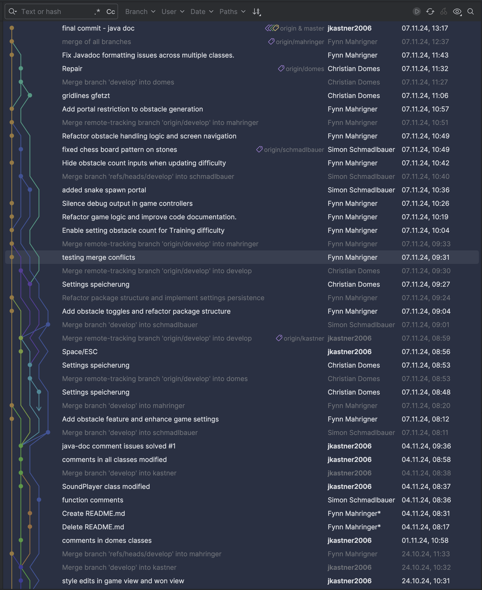

Informationstechnische Projekte im 3. & 4. Jahrgang
Notes:
ALT/OPTION (Mac) + Click = ZOOM
You can select from different transitions, like:
None -
Fade -
Slide -
Convex -
Concave -
Zoom
Projekte: Übersicht
- Taschenrechner
- Schere-Stein-Papier
- Minesweeper
- Tetris
- Quiz-App
- Snake
Technologien: Übersicht
- Version-Control: Git, GitHub
- Programming-Language: Java
- Styles: CSS
- Projekt Management: zuerst Klassisch, dann Agil (Scrum)
Taschenrechner
Projektbeschreibung:
Ziel des Projekts war es, einen Taschenrechner in Java-FX zu programmieren und diesen dann durch eine ausführbare .jar-Datei verwenden zu können.
Der Taschenrechner wurde noch ohne einer Projektmanagement-Methode oder der Verwendung von Git/GitHub umgesetzt.
Weiters war dieses Projekt ein Einzelprojekt.
Projektlaufzeit: ungefähr 1 Monat
Schere-Stein-Papier
Projektbeschreibung:
Wirds das Programm ausgeführt sind in der oberen Hälfte des geöffneten Fensters 3 Symbole plaziert.
(Symbole für Schere, Stein und Papier)
Sie entscheiden sich für ein Symbol und klicken darauf.
(Das Symbol ist eigentlich ein Button, der mittels CSS ein -fx-background-image bekommen hat.)
Dieses Spiel wurde nicht im Mehrspieler Konzept entworfen, deshalb spielen Sie gegen den Computer.
Während Sie also auf die Entscheidung des Computers warten, lädt eine Progress-Bar, um den Wartevorgang zu überbrücken.
Im unteren Bereich des Fensters sehen Sie nun das Ergebnis.
Mittels 2 Image-Views wird jeweils das gewählte Symbol des Gewinners und des Verlierers dargestellt.
Unterhalb der Symbole wird geschrieben, wer das Symbol gewählt hat.
In der Mitte, also zwischen den Symbolen, steht das Wort schlägt, d.h. das stärkere Symbol (der Gewinner) steht immer auf der linken Seite.
Natürlich gibt es auch einen Fall, dass Sie und der Computer das gleiche Symbol wählen!
Es wird der Text unentschieden ausgegeben, wenn der Spieler und der Computer gleichen Punktestand haben.
Erstes Projekt mit: GitHub (Users with permission)
Projektlaufzeit: ungefähr 1-2 Monat(e)
Minesweeper
Projektbeschreibung:
Detailbeschreibung:
Diese Version von Minesweeper wurde der Version von Microsoft, das bis ins Jahr 2007 in Windows-Betriebssystemen beigelegt war.
Die selbst-programmierte Version beinhaltet, so wie das Originale, 3 Spielmodi (einfach, mittel, schwer).
Auf der grafischen Ansicht sehen Sie eine Auswahlbox (Combobox), mit dieser können Sie die Spielmodi auswählen.
Wenn Sie sich entschieden haben, klicken Sie auf den Button Start.
Nun können Sie wie gewohnt das Spiel Minesweeper spielen:
- mit der linken Maustaste decken Sie alle Felder auf
- mit der rechten Maustaste können Sie Flaggen setzten bzw. entfernen oben rechts haben Sie einen Zähler, der zählt wie viel Flaggen Sie verwendet haben
Besonderheit:
Minesweeper-Button Klasse erstellt, um im Button alle nötigen Daten wie z.B. Koordinaten, hasBomb, hasFlag, ... speichern zu können
Optimierungen: Spielfeld generation in eigene Klasse ausgelagert. Code-Verdoppelung im Controller für Start-Methode bereinigt. (vorher für jede Spielfeldgröße eigene Schleife)
Beschreibungen bei Methoden:
Methoden sind alle nach Norm beschrieben. Beschreibung bei wichtigen/interessanten/schwierigen Stellen:
Zusätzlich finden Sie bei etwas schwierigeren Stellen bzw. programmtechnisch interessanten Stellen eine kurze Beschreibung in Form eines Einzeil-Kommentars.
Dieses Projekt war ein Einzelprojekt
Projektlaufzeit: 11. Jänner 2024 bis 15. Februar 2024
Gruppenprojekt: Tetris

Projektbeschreibung:
Tetris ist ein klassisches Puzzle-Spiel, das in den 1980er Jahren entwickelt wurde und bis heute zu den bekanntesten Videospielen zählt. Ziel des Spiels ist es, herunterfallende Blöcke (Tetrominos) in einer rechteckigen Spielfläche so zu platzieren, dass vollständige horizontale Linien entstehen, die dann entfernt werden. Das Spiel endet, wenn sich die Blöcke bis zur oberen Grenze der Spielfläche stapeln.
In diesem Projekt wird eine eigene Version von Tetris entwickelt. Ziel ist es, die grundlegenden Spielmechaniken zu implementieren und gegebenenfalls um zusätzliche Funktionen zu erweitern.
GitHub Repository (only for Users with permission)Projektteam: Lukas Schlader, Simon Schmadlbauer, Jannick Kastner
Projektlaufzeit: 11. März 2024 bis 5. Mai 2024
Quiz-App
  Projektbeschreibung:
Ziel der Quiz App war es, eine ähnliche Applikation zu erstellen wie Letto und den Umgang mit dem agilen Projektmanagement zu üben
Die App erfüllt gewisse Funktionen, die nicht gefordert waren, z.B. kann man auch in der App Quizzes erstellen und speichern.
Projektmanagmentmethode: SCRUM mit Trello Board
Trello Board (only for Users with permission)Anzahl der Sprints: 2 (zu je einer Woche)
GitHub Repository (only for Users with permission)
Projektteam: Fynn Mahringer, Daniel Kimmerstorfer, Jannick Kastner
Projektlaufzeit: Rest vom Schuljahr 2024 - ungefähr 2 Wochen
Snake
   Projektbeschreibung:
Ziel war es nach den Vorgaben
einen Nachbau des Spiels Snake in Java FX zu programmieren.
Weiters sollte darauf geachtet werden, dass das Projektmanagement mit SCRUM mit Trello Board implementiert wird.
Das MVC-Pattern sollte auch angewendet werden.
Projektmanagmentmethode: SCRUM mit Trello Board
Trello Board (only for Users with permission)Anzahl der Sprints: 3 (zu je 2 Wochen, der dritte etwas mehr)
Storypoints: 125
GitHub Repository (only for Users with permission)
Projektteam: Fynn Mahringer, Simon Schmadlbauer, Christian Domes, Jannick Kastner
Projektlaufzeit: 13. September 2024 bis 7. November 2024
Spielbeschreibung:
Wenn man das Spiel startet, kommt man auf eine Menü-Seite, auf der man einen User erstellen bzw. auswählen kann. Ist dieser ausgewählt, kann der Start-Button geklickt werden.
Dann kommt man auf die View vom Pre-Game. Da kann man verschiedene Schwierigkeitsmodi auswählen.
Es gibt auch einen namens "Training", dieser erlaubt auch weitere Einstellungen während des Spiels in den Settings.
Das eigentliche Spiel!
Mit den Pfeiltasten kann die Schlange gesteuert werden.
Mittels ESC wird das Spiel sofort beendet und mit der Taste SPACE kommt man in die Settings...
Game Over:
Man kann wieder zum Startscreen oder das Spiel beenden. (EXIT)
Das Settings-Menü:
Eine Basisanforderung war es, dass ein Volume Slider für die angeforderte Hintergrundmusik implementiert wird. (inkl. Button für ON/OFF)
Weiters wurden Sound-Effekte hinzugefügt (beim Fressen eines Happens bzw. beim Verlieren).
Der Speed der Schlange und das Spezialfutter kann nur im Trainings-Modus umgestellt werden, Schwierigkeitslevels beinhalten dies bereits.
Hindernisse gibt es auch, man kann sie auch replacen lassen.
Der untere Slider kann dazu verwendet werden, um die Farbe der Schlange zu ändern. Diese Möglichkeit besteht aber nur in den Settings vor dem Spiel.
GitHub Log:
Commit-Philosophie:
Branches:
- Develop-Branch
- Developer-Branches
- Domes-Branch
- Kastner-Branch
- Mahringer-Branch
- Schmadlbauer-Branch
Unsere Philosophie war es, dass alle immer am bestmöglich, neuestem Stand sind, daher wurde min. einmal pro Woche ein Commit von jedem in den Develop-Branch gemerged.
Es wurde im Prinzip die Arbeit von jedem zuerst in den eigenen Branch committed und dann der neueste Stand zuerst in den jeweiligen Developer Branch gemerged. (solving merge conflicts)
Danach konnte der aktuelle Stand aus den einzelnen Developer-Branches ohne Probleme in den Haupt-Develop-Branch geschoben und gepusht werden...